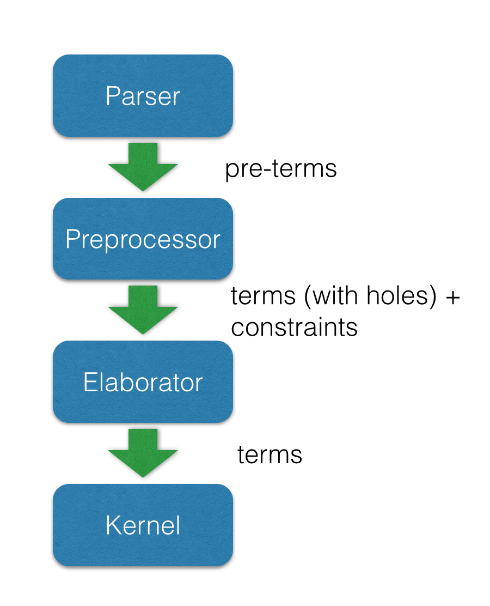
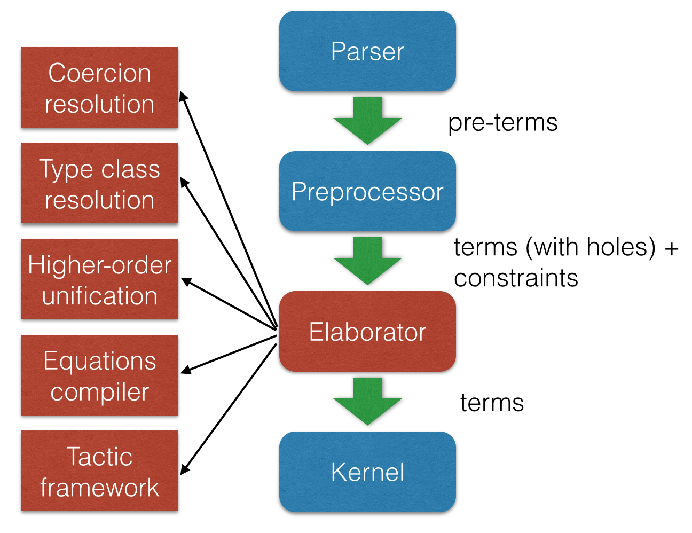
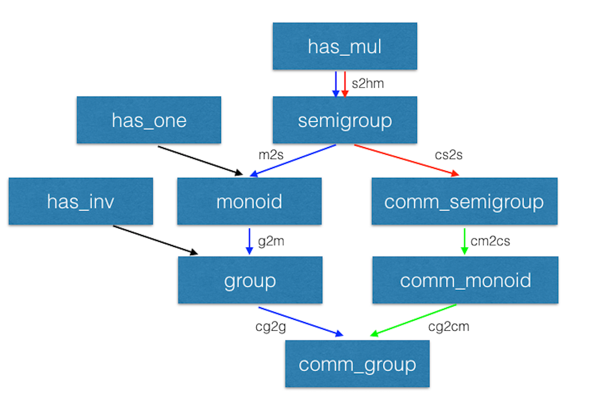

The Lean Theorem Prover
Leonardo de Moura (Microsoft Research)
ICTAC, Taipei, 2016/10/24
http://leanprover.github.io/
The Lean Theorem Prover Team
- Jeremy Avigad (CMU),
- Gabriel Ebner (CMU),
- Sebastian Ullrich (CMU),
- Floris van Doorn (CMU),
- Rob Lewis (CMU),
- Jared Roesch (UW),
- Daniel Selsam (Stanford)
Many thanks to
- Soonho Kong
- Jakob von Raumer
- Cody Roux
- Georges Gonthier
- Grant Passmore
- Nikhil Swamy
- Assia Mahboubi
- Bas Spitters
- Steve Awodey
- Ulrik Buchholtz
- Tom Ball
- Parikshit Khanna
- Haitao Zhang
Introduction: Lean
- New open source theorem prover
- Platform for
- Software verification & development
- Formalized mathematics
- Education (mathematics, logic, computer science)
- Synthesis (proofs & programs)
- de Bruijn's Principle: small trusted kernel
- Expressive logic
- Partial constructions: automation fills the "holes"
- Meta-programming
Introduction: Lean
- Backend for other systems
- Haskell API for Lean developed by Joe Hendrix
- Interactive theory proving course at CMU
- Introduction to Logic course at CMU
- It is an ongoing and long long term effort
Main Goal
Lean aims to bring two worlds together
- An interactive theorem prover with powerful automation
- An automated reasoning tool that
- produces (detailed) proofs,
- has a rich language,
- can be used interactively, and
- is built on a verified mathematical library
Secondary Goals
- Robust proofs
- Minimalist and high-performace kernel
- Education
- Interactive courses
- Proving should be as easy as programming
- Have Fun
Software verification and
Formalized Mathematics
- Some projects at Microsoft Research
- Disclaimer: this projects were developed before Lean existed
- They used Boogie/Z3 and Coq.
Software verification and
Formalized Mathematics
- Similar problems
- Proof stability
- Libraries are big
- Scalability issues
- Finding existing functions/theorems
- Repetitive tasks
- Common problems in software engineering:
- Every attempt to create a single unified language failed (ADA?)
- We keep reimplementing the same libraries over and over again
- Mixing libraries from different languages is usually a mess
- Bit rotting
- These problems also affect formalized mathematics
What is new?
- Meta-programming
- Extend Lean using Lean
- Proof/Program synthesizes
- Poweful elaboration engine that can handle
- Higher-order unification
- Type classes
- Coercions
- Ad-hoc polymorphism (aka overloading)
"By relieving the brain of all unnecessary work, a good notation sets it free to concentrate on more advanced problems, and in effect increases the mental power of the race." – A. N. Whitehead
What is new?
- Meta-programming
- Poweful elaboration engine that can handle
- Small trusted kernel
- It does not contain
- Termination checker
- Fixpoint operators
- Pattern matching
- Module management
- It does not contain
What is new?
- Meta-programming
- Poweful elaboration engine that can handle
- Small trusted kernel
- Multi-core support
- Process theorems in parallel
- Execute/try tactics (automation) in parallel
What is new?
- Meta-programming
- Poweful elaboration engine that can handle
- Small trusted kernel
- Multi-core support
- Fast incremental compilation
What is new?
- Meta-programming
- Poweful elaboration engine that can handle
- Small trusted kernel
- Multi-core support
- Fast incremental compilation
- Support for mixed declarative and tactic proof style
Dependent Type Theory
- Before we started Lean, we have studied different theorem provers: ACL2, Agda, Automath, Coq, HOL (family), Isabelle, Mizar, PVS
- Dependent type theory is really beautiful
- Some advantages
- Bultin computational interpretation
- Same data-structure for representing proofs and terms
- Reduce code duplication, example:
- We implemented a compiler for Haskell-like recursive equations, we can use it to construct proofs by induction
- Mathematical structures (such as Groups and Rings) are first-class citizens
- Some references
- In praise of dependent types (Mike Shulman)
- Type inference in mathematics (Jeremy Avigad)
Architecture

Architecture

Agnostic Mathematics
- Support constructive and classical mathematics
- Computation is important to mathematics
- Core parts of the standard library are constructive
- Separation of concerns:
- Methods to write computer programs
- Freedom to use a nonconstructive theories and methods to reason about them
Noncomputable Keyword
- Our conjecture: most users don't care about constructivism, what they really care about is whether code can be generated or not for a definition.
Freedom to trust
- Option: type check imported modules.
- Macros: semantic attachments for speeding up type checking and evaluation.
- Macros can be eliminated (expanded into pure Lean code).
- Each macro provides a function for computing the type and evaluating an instance.
- Each macro can be assigned a trust level.
- Many applications: interface with the GNU multiprecision arithmetic (GMP) library.
Freedom to trust
- Relaxed mode
- Trust the imported modules have not been tampered
- Trust all macros
- Paranoid mode
- Retype check all imported modules (someone may have changed the binaries)
- Expand all macros (the developers may have made mistakes, GMP may be buggy)
- Stronger guarantee Retype check everything using Lean reference type checker
- Daniel Selsam implemented a reference type checker in Haskell
Exporting libraries
- All Lean files can be exported in a very simple format
- Documentation is available on github
- Communicate with other tools
- Interface with the Lean reference type checker
- Haskell API can be used to import libraries, browse and construct terms, parse files, etc.
- We also have a C API
Recursive equations
- Recursors are inconvenient to use.
- Compiler from recursive equations to recursors.
- Two compilation strategies: structural and well-founded recursion
- Proofs by induction
Recursive equations
- Dependent pattern matching
Human-readable proofs
Type classes
Type classes
Coercions as type classes
Meta-programming
- Extending Lean in Lean
Lean has an efficient bytecode interpreter
inductive expr | var : unsigned → expr | sort : level → expr | const : name → list level → expr | app : expr → expr → expr ... meta constant tactic_state : Type inductive tactic_result (A : Type) | success : A → tactic_state → tactic_result | exception : (unit → format) → tactic_state → tactic_result meta def tactic (A : Type) := tactic_state → tactic_result A meta instance : monad tactic := ... meta constant infer_type : expr → tactic expr meta constant subst : expr → tactic unit meta constant exact : expr → tactic unit meta def apply : expr → tactic unit := ...
Meta-programming
Meta-programming (decidable equality)
Building an equality predicate for each new type is very tedious.
def decidable_eq (A : Type u) := ∀ (a b : A), decidable (a = b) instance nat_dec_eq : decidable_eq ℕ | zero zero := is_true rfl | (succ x) zero := is_false (λ h, nat.no_confusion h) | zero (succ y) := is_false (λ h, nat.no_confusion h) | (succ x) (succ y) := match nat_dec_eq x y with | is_true xeqy := is_true (xeqy ▸ eq.refl (succ x)) | is_false xney := is_false (λ h, nat.no_confusion h (λ xeqy, absurd xeqy xney)) end We implemented a tactic in Lean (< 100 lines) that creates these instances automatically.
variables {A : Type u} {B : Type v} instance {p : A → Prop} [decidable_eq A] : decidable_eq (subtype p) := by mk_dec_eq_instance instance [decidable_eq A] : decidable_eq (list A) := by mk_dec_eq_instance instance [decidable_eq A] [decidable_eq B] : decidable_eq (sum A B) := by mk_dec_eq_instance
Meta-programming (examples)
Resolution prover (Gabriel Ebner)
structure resolution_prover_state := (active : rb_map name active_cls) (passive : rb_map name cls) (newly_derived : list cls) (prec : list expr) (age : nat) meta def resolution_prover := stateT resolution_prover_state tactic - Isabelle's auto tactic (Jeremy Avigad)
Simplifier
Structures
- Simplifier applies generic lemmas.
Structures (additional instances)
Diamonds

Diamonds (cont.)
- Now, given a
[g : comm_group A], suppose we want to apply the theoremright_commto the following term as a rewriting rule.
- What about the argument
[s : comm_semigroup A]?
Diamonds (cont.)
- When we expand the notation, we can see the "hidden" complexity. For simplicity, let's assume we are trying to match
?a * ?bwithx * y

Work in progress
- C++ code generation (Jared Roesch - UW)
- Many of the compilation steps are shared with the bytecode interpreter.
- Application 1: efficient tactics
- Write tactic/automation in Lean
- Generate C++ code
- Build shared library and dynamically link with Lean executable
- Application 2: low-level hacking
- Verified file system
- Foreign function interface
- Foreign function interface
Work in progress
- AC rewriting
- SMT-like automation
- Main challenge: dependent types
- Daniel Selsam and I have developed a congruence closure procedure and E-matching for dependent type theory (IJCAR 2016).
- Extending the parser using Lean
- Parser monad
- Target application: DSL development
- Extending the pretty printer using Lean
- Target application: DSL development
Thank you
- Website: http://leanprover.github.io/
- Source code: https://github.com/leanprover/lean
- Theorem proving in Lean: https://leanprover.github.io/theorem_proving_in_lean
- Programming in Lean (work in progress): https://leanprover.github.io/programming_in_lean